pip list | grep "spot[RiverPython]"spotPython 0.2.37
spotRiver 0.0.93Note: you may need to restart the kernel to use updated packages.In this tutorial, we will show how spotPython can be integrated into the PyTorch training workflow for a classifiaction task.
./data/VBDP/train.csv.This document refers to the following software versions:
python: 3.10.10torch: 2.0.1torchvision: 0.15.0pip list | grep "spot[RiverPython]"spotPython 0.2.37
spotRiver 0.0.93Note: you may need to restart the kernel to use updated packages.spotPython can be installed via pip. Alternatively, the source code can be downloaded from gitHub: https://github.com/sequential-parameter-optimization/spotPython.
!pip install spotPythonspotPython from gitHub.# import sys
# !{sys.executable} -m pip install --upgrade build
# !{sys.executable} -m pip install --upgrade --force-reinstall spotPythonBefore we consider the detailed experimental setup, we select the parameters that affect run time, initial design size and the device that is used.
DEVICE."cpu" is preferred (on Mac)."cuda:0" instead.None, spotPython will automatically select the device.
"mps" on Macs, which is not the best choice for simple neural nets.MAX_TIME = 1
INIT_SIZE = 5
DEVICE = None # "cpu" # "cuda:0"from spotPython.utils.device import getDevice
DEVICE = getDevice(DEVICE)
print(DEVICE)mpsimport os
import copy
import socket
from datetime import datetime
from dateutil.tz import tzlocal
start_time = datetime.now(tzlocal())
HOSTNAME = socket.gethostname().split(".")[0]
experiment_name = '25-torch' + "_" + HOSTNAME + "_" + str(MAX_TIME) + "min_" + str(INIT_SIZE) + "init_" + str(start_time).split(".", 1)[0].replace(' ', '_')
experiment_name = experiment_name.replace(':', '-')
print(experiment_name)
if not os.path.exists('./figures'):
os.makedirs('./figures')25-torch_bartz09_1min_5init_2023-06-18_20-19-38fun_control DictionaryspotPython uses a Python dictionary for storing the information required for the hyperparameter tuning process, which was described in Section 14.2, see Initialization of the fun_control Dictionary in the documentation.
from spotPython.utils.init import fun_control_init
fun_control = fun_control_init(task="classification",
tensorboard_path="runs/25_spot_torch_vbdp",
device=DEVICE)import pandas as pd
from sklearn.preprocessing import OrdinalEncoder
train_df = pd.read_csv('./data/VBDP/train.csv')
# remove the id column
train_df = train_df.drop(columns=['id'])
n_samples = train_df.shape[0]
n_features = train_df.shape[1] - 1
target_column = "prognosis"
# # Encoder our prognosis labels as integers for easier decoding later
enc = OrdinalEncoder()
train_df[target_column] = enc.fit_transform(train_df[[target_column]])
train_df.head()
# convert all entries to int for faster processing
train_df = train_df.astype(int)from spotPython.utils.convert import add_logical_columns
df_new = train_df.copy()
# save the target column using "target_column" as the column name
target = train_df[target_column]
# remove the target column
df_new = df_new.drop(columns=[target_column])
train_df = add_logical_columns(df_new)
# add the target column back
train_df[target_column] = target
train_df = train_df.astype(int)
train_df.head()| sudden_fever | headache | mouth_bleed | nose_bleed | muscle_pain | joint_pain | vomiting | rash | diarrhea | hypotension | ... | 6039 | 6040 | 6041 | 6042 | 6043 | 6044 | 6045 | 6046 | 6047 | prognosis | |
|---|---|---|---|---|---|---|---|---|---|---|---|---|---|---|---|---|---|---|---|---|---|
| 0 | 1 | 1 | 0 | 1 | 1 | 1 | 1 | 0 | 1 | 1 | ... | 0 | 0 | 0 | 0 | 0 | 0 | 0 | 0 | 0 | 3 |
| 1 | 0 | 0 | 0 | 0 | 0 | 0 | 1 | 0 | 1 | 0 | ... | 0 | 0 | 0 | 0 | 0 | 0 | 0 | 0 | 0 | 7 |
| 2 | 0 | 1 | 1 | 1 | 0 | 1 | 1 | 1 | 1 | 1 | ... | 1 | 1 | 0 | 1 | 1 | 0 | 1 | 1 | 0 | 3 |
| 3 | 0 | 0 | 1 | 1 | 1 | 1 | 0 | 1 | 0 | 1 | ... | 0 | 0 | 0 | 0 | 0 | 0 | 0 | 0 | 0 | 10 |
| 4 | 0 | 0 | 0 | 0 | 0 | 0 | 0 | 0 | 1 | 0 | ... | 0 | 1 | 1 | 0 | 1 | 1 | 0 | 0 | 0 | 6 |
5 rows × 6113 columns
from sklearn.model_selection import train_test_split
import numpy as np
n_samples = train_df.shape[0]
n_features = train_df.shape[1] - 1
train_df.columns = [f"x{i}" for i in range(1, n_features+1)] + [target_column]
train_df.head()| x1 | x2 | x3 | x4 | x5 | x6 | x7 | x8 | x9 | x10 | ... | x6104 | x6105 | x6106 | x6107 | x6108 | x6109 | x6110 | x6111 | x6112 | prognosis | |
|---|---|---|---|---|---|---|---|---|---|---|---|---|---|---|---|---|---|---|---|---|---|
| 0 | 1 | 1 | 0 | 1 | 1 | 1 | 1 | 0 | 1 | 1 | ... | 0 | 0 | 0 | 0 | 0 | 0 | 0 | 0 | 0 | 3 |
| 1 | 0 | 0 | 0 | 0 | 0 | 0 | 1 | 0 | 1 | 0 | ... | 0 | 0 | 0 | 0 | 0 | 0 | 0 | 0 | 0 | 7 |
| 2 | 0 | 1 | 1 | 1 | 0 | 1 | 1 | 1 | 1 | 1 | ... | 1 | 1 | 0 | 1 | 1 | 0 | 1 | 1 | 0 | 3 |
| 3 | 0 | 0 | 1 | 1 | 1 | 1 | 0 | 1 | 0 | 1 | ... | 0 | 0 | 0 | 0 | 0 | 0 | 0 | 0 | 0 | 10 |
| 4 | 0 | 0 | 0 | 0 | 0 | 0 | 0 | 0 | 1 | 0 | ... | 0 | 1 | 1 | 0 | 1 | 1 | 0 | 0 | 0 | 6 |
5 rows × 6113 columns
train_df[target_column].head()0 3
1 7
2 3
3 10
4 6
Name: prognosis, dtype: int64X_train, X_test, y_train, y_test = train_test_split(train_df.drop(target_column, axis=1), train_df[target_column],
random_state=42,
test_size=0.25,
stratify=train_df[target_column])
trainset = pd.DataFrame(np.hstack((X_train, np.array(y_train).reshape(-1, 1))))
testset = pd.DataFrame(np.hstack((X_test, np.array(y_test).reshape(-1, 1))))
trainset.columns = [f"x{i}" for i in range(1, n_features+1)] + [target_column]
testset.columns = [f"x{i}" for i in range(1, n_features+1)] + [target_column]
print(train_df.shape)
print(trainset.shape)
print(testset.shape)(707, 6113)
(530, 6113)
(177, 6113)import torch
from sklearn.model_selection import train_test_split
from spotPython.torch.dataframedataset import DataFrameDataset
dtype_x = torch.float32
dtype_y = torch.long
train_df = DataFrameDataset(train_df, target_column=target_column, dtype_x=dtype_x, dtype_y=dtype_y)
train = DataFrameDataset(trainset, target_column=target_column, dtype_x=dtype_x, dtype_y=dtype_y)
test = DataFrameDataset(testset, target_column=target_column, dtype_x=dtype_x, dtype_y=dtype_y)
n_samples = len(train)# add the dataset to the fun_control
fun_control.update({"data": train_df, # full dataset,
"train": train,
"test": test,
"n_samples": n_samples,
"target_column": target_column})After the training and test data are specified and added to the fun_control dictionary, spotPython allows the specification of a data preprocessing pipeline, e.g., for the scaling of the data or for the one-hot encoding of categorical variables, see Section 14.4. This feature is not used here, so we do not change the default value (which is None).
algorithm and core_model_hyper_dictspotPython includes the Net_vbdp class which is implemented in the file netvbdp.py. The class is imported here.
This class inherits from the class Net_Core which is implemented in the file netcore.py, see Section 14.5.1.
from spotPython.torch.netvbdp import Net_vbdp
from spotPython.data.torch_hyper_dict import TorchHyperDict
from spotPython.hyperparameters.values import add_core_model_to_fun_control
fun_control = add_core_model_to_fun_control(core_model=Net_vbdp,
fun_control=fun_control,
hyper_dict=TorchHyperDict)hyper_dict Hyperparameters for the Selected Algorithm aka core_modelspotPython provides functions for modifying the hyperparameters, their bounds and factors as well as for activating and de-activating hyperparameters without re-compilation of the Python source code. These functions were described in Section 14.6.
epochs and patience are set to small values for demonstration purposes. These values are too small for a real application.fun_control = modify_hyper_parameter_bounds(fun_control, "epochs", bounds=[7, 9]) andfun_control = modify_hyper_parameter_bounds(fun_control, "patience", bounds=[2, 7])from spotPython.hyperparameters.values import modify_hyper_parameter_bounds
fun_control = modify_hyper_parameter_bounds(fun_control, "_L0", bounds=[n_features, n_features])
fun_control = modify_hyper_parameter_bounds(fun_control, "l1", bounds=[6, 13])
fun_control = modify_hyper_parameter_bounds(fun_control, "epochs", bounds=[2, 3])
fun_control = modify_hyper_parameter_bounds(fun_control, "patience", bounds=[2, 2])from spotPython.hyperparameters.values import modify_hyper_parameter_levels
fun_control = modify_hyper_parameter_levels(fun_control, "optimizer",["Adam", "AdamW", "Adamax", "NAdam"])
# fun_control = modify_hyper_parameter_levels(fun_control, "optimizer", ["Adam"])
# fun_control["core_model_hyper_dict"]Optimizers are described in Section 14.6.1.
fun_control = modify_hyper_parameter_bounds(fun_control,
"lr_mult", bounds=[1e-3, 1e-3])
fun_control = modify_hyper_parameter_bounds(fun_control,
"sgd_momentum", bounds=[0.9, 0.9])The evaluation procedure requires the specification of two elements:
The loss function is specified by the key "loss_function". We will use CrossEntropy loss for the multiclass-classification task.
from torch.nn import CrossEntropyLoss
loss_function = CrossEntropyLoss()
fun_control.update({"loss_function": loss_function})from spotPython.torch.mapk import MAPK
import torch
mapk = MAPK(k=2)
target = torch.tensor([0, 1, 2, 2])
preds = torch.tensor(
[
[0.5, 0.2, 0.2], # 0 is in top 2
[0.3, 0.4, 0.2], # 1 is in top 2
[0.2, 0.4, 0.3], # 2 is in top 2
[0.7, 0.2, 0.1], # 2 isn't in top 2
]
)
mapk.update(preds, target)
print(mapk.compute()) # tensor(0.6250)tensor(0.6250)from spotPython.torch.mapk import MAPK
import torchmetrics
metric_torch = MAPK(k=3)
fun_control.update({"metric_torch": metric_torch})The following code passes the information about the parameter ranges and bounds to spot.
# extract the variable types, names, and bounds
from spotPython.hyperparameters.values import (get_bound_values,
get_var_name,
get_var_type,)
var_type = get_var_type(fun_control)
var_name = get_var_name(fun_control)
fun_control.update({"var_type": var_type,
"var_name": var_name})
lower = get_bound_values(fun_control, "lower")
upper = get_bound_values(fun_control, "upper")Now, the dictionary fun_control contains all information needed for the hyperparameter tuning. Before the hyperparameter tuning is started, it is recommended to take a look at the experimental design. The method gen_design_table generates a design table as follows:
from spotPython.utils.eda import gen_design_table
print(gen_design_table(fun_control))| name | type | default | lower | upper | transform |
|--------------|--------|-----------|----------|----------|-----------------------|
| _L0 | int | 64 | 6112 | 6112 | None |
| l1 | int | 8 | 6 | 13 | transform_power_2_int |
| dropout_prob | float | 0.01 | 0 | 0.9 | None |
| lr_mult | float | 1.0 | 0.001 | 0.001 | None |
| batch_size | int | 4 | 1 | 4 | transform_power_2_int |
| epochs | int | 4 | 2 | 3 | transform_power_2_int |
| k_folds | int | 1 | 1 | 1 | None |
| patience | int | 2 | 2 | 2 | transform_power_2_int |
| optimizer | factor | SGD | 0 | 3 | None |
| sgd_momentum | float | 0.0 | 0.9 | 0.9 | None |This allows to check if all information is available and if the information is correct.
fun_torchThe objective function fun_torch is selected next. It implements an interface from PyTorch’s training, validation, and testing methods to spotPython.
from spotPython.fun.hypertorch import HyperTorch
fun = HyperTorch().fun_torchfrom spotPython.hyperparameters.values import get_default_hyperparameters_as_array
hyper_dict=TorchHyperDict().load()
X_start = get_default_hyperparameters_as_array(fun_control, hyper_dict)The spotPython hyperparameter tuning is started by calling the Spot function as described in Section 14.8.4.
import numpy as np
from spotPython.spot import spot
from math import inf
spot_tuner = spot.Spot(fun=fun,
lower = lower,
upper = upper,
fun_evals = inf,
fun_repeats = 1,
max_time = MAX_TIME,
noise = False,
tolerance_x = np.sqrt(np.spacing(1)),
var_type = var_type,
var_name = var_name,
infill_criterion = "y",
n_points = 1,
seed=123,
log_level = 50,
show_models= False,
show_progress= True,
fun_control = fun_control,
design_control={"init_size": INIT_SIZE,
"repeats": 1},
surrogate_control={"noise": True,
"cod_type": "norm",
"min_theta": -4,
"max_theta": 3,
"n_theta": len(var_name),
"model_fun_evals": 10_000,
"log_level": 50
})
spot_tuner.run(X_start=X_start)
config: {'_L0': 6112, 'l1': 2048, 'dropout_prob': 0.17031221661559992, 'lr_mult': 0.001, 'batch_size': 16, 'epochs': 8, 'k_folds': 1, 'patience': 4, 'optimizer': 'AdamW', 'sgd_momentum': 0.9}
Epoch: 1 | MAPK: 0.1651785671710968 | Loss: 2.3975574629647389 | Acc: 0.0754716981132075.
Epoch: 2 | MAPK: 0.1696428805589676 | Loss: 2.3974896839686801 | Acc: 0.0849056603773585.
Epoch: 3 | MAPK: 0.1711309701204300 | Loss: 2.3974820716040477 | Acc: 0.0707547169811321.
Epoch: 4 | MAPK: 0.1815476119518280 | Loss: 2.3973973137991771 | Acc: 0.0896226415094340.
Epoch: 5 | MAPK: 0.1994047611951828 | Loss: 2.3973897014345442 | Acc: 0.0943396226415094.
Epoch: 6 | MAPK: 0.1919642686843872 | Loss: 2.3973588773182462 | Acc: 0.0801886792452830.
Epoch: 7 | MAPK: 0.2090773582458496 | Loss: 2.3972559826714650 | Acc: 0.0754716981132075.
Epoch: 8 | MAPK: 0.2061011940240860 | Loss: 2.3973229782921925 | Acc: 0.0849056603773585.
Returned to Spot: Validation loss: 2.3973229782921925
config: {'_L0': 6112, 'l1': 256, 'dropout_prob': 0.19379790035512987, 'lr_mult': 0.001, 'batch_size': 8, 'epochs': 4, 'k_folds': 1, 'patience': 4, 'optimizer': 'Adamax', 'sgd_momentum': 0.9}
Epoch: 1 | MAPK: 0.2145061492919922 | Loss: 2.3957682185702853 | Acc: 0.1132075471698113.
Epoch: 2 | MAPK: 0.2129629701375961 | Loss: 2.3958021799723306 | Acc: 0.1132075471698113.
Epoch: 3 | MAPK: 0.2114197462797165 | Loss: 2.3957862324184842 | Acc: 0.1132075471698113.
Epoch: 4 | MAPK: 0.2129629701375961 | Loss: 2.3958155049218073 | Acc: 0.1132075471698113.
Returned to Spot: Validation loss: 2.3958155049218073
config: {'_L0': 6112, 'l1': 4096, 'dropout_prob': 0.6759063718076167, 'lr_mult': 0.001, 'batch_size': 2, 'epochs': 8, 'k_folds': 1, 'patience': 4, 'optimizer': 'NAdam', 'sgd_momentum': 0.9}
Epoch: 1 | MAPK: 0.1753144711256027 | Loss: 2.3977657691487728 | Acc: 0.0943396226415094.
Epoch: 2 | MAPK: 0.1839622408151627 | Loss: 2.3976041393459968 | Acc: 0.1084905660377359.
Epoch: 3 | MAPK: 0.1761006414890289 | Loss: 2.3975639883077369 | Acc: 0.0801886792452830.
Epoch: 4 | MAPK: 0.1863207519054413 | Loss: 2.3974809511652531 | Acc: 0.1132075471698113.
Epoch: 5 | MAPK: 0.1863207519054413 | Loss: 2.3973045259151817 | Acc: 0.0943396226415094.
Epoch: 6 | MAPK: 0.1823899298906326 | Loss: 2.3970273868092953 | Acc: 0.0896226415094340.
Epoch: 7 | MAPK: 0.1855345815420151 | Loss: 2.3967317117834992 | Acc: 0.0943396226415094.
Epoch: 8 | MAPK: 0.1855345964431763 | Loss: 2.3964097544832050 | Acc: 0.0943396226415094.
Returned to Spot: Validation loss: 2.396409754483205
config: {'_L0': 6112, 'l1': 128, 'dropout_prob': 0.37306669346546995, 'lr_mult': 0.001, 'batch_size': 4, 'epochs': 4, 'k_folds': 1, 'patience': 4, 'optimizer': 'AdamW', 'sgd_momentum': 0.9}
Epoch: 1 | MAPK: 0.1635220348834991 | Loss: 2.3983783227092816 | Acc: 0.0943396226415094.
Epoch: 2 | MAPK: 0.1627358496189117 | Loss: 2.3984097309832304 | Acc: 0.0943396226415094.
Epoch: 3 | MAPK: 0.1682389974594116 | Loss: 2.3983260100742556 | Acc: 0.0943396226415094.
Epoch: 4 | MAPK: 0.1627358496189117 | Loss: 2.3983200451113142 | Acc: 0.0943396226415094.
Returned to Spot: Validation loss: 2.3983200451113142
config: {'_L0': 6112, 'l1': 1024, 'dropout_prob': 0.870137281216666, 'lr_mult': 0.001, 'batch_size': 8, 'epochs': 8, 'k_folds': 1, 'patience': 4, 'optimizer': 'Adam', 'sgd_momentum': 0.9}
Epoch: 1 | MAPK: 0.1581790298223495 | Loss: 2.3981216218736439 | Acc: 0.0990566037735849.
Epoch: 2 | MAPK: 0.1527777761220932 | Loss: 2.3979346222347684 | Acc: 0.0943396226415094.
Epoch: 3 | MAPK: 0.1512345671653748 | Loss: 2.3978664080301919 | Acc: 0.0849056603773585.
Epoch: 4 | MAPK: 0.1628086715936661 | Loss: 2.3980291596165411 | Acc: 0.0990566037735849.
Epoch: 5 | MAPK: 0.1520061790943146 | Loss: 2.3979206526720964 | Acc: 0.0896226415094340.
Epoch: 6 | MAPK: 0.1489197611808777 | Loss: 2.3978451269644276 | Acc: 0.0801886792452830.
Epoch: 7 | MAPK: 0.1597222238779068 | Loss: 2.3982077263019703 | Acc: 0.0896226415094340.
Epoch: 8 | MAPK: 0.1388888955116272 | Loss: 2.3979378276401095 | Acc: 0.0660377358490566.
Returned to Spot: Validation loss: 2.3979378276401095
config: {'_L0': 6112, 'l1': 256, 'dropout_prob': 0.1474303744198715, 'lr_mult': 0.001, 'batch_size': 16, 'epochs': 4, 'k_folds': 1, 'patience': 4, 'optimizer': 'Adamax', 'sgd_momentum': 0.9}
Epoch: 1 | MAPK: 0.2008928507566452 | Loss: 2.3970220088958740 | Acc: 0.1367924528301887.
Epoch: 2 | MAPK: 0.1994047611951828 | Loss: 2.3969938244138445 | Acc: 0.1367924528301887.
Epoch: 3 | MAPK: 0.1949404776096344 | Loss: 2.3969893455505371 | Acc: 0.1367924528301887.
Epoch: 4 | MAPK: 0.2008928358554840 | Loss: 2.3969201190131053 | Acc: 0.1367924528301887.
Returned to Spot: Validation loss: 2.3969201190131053spotPython tuning: 2.3958155049218073 [----------] 1.69%
config: {'_L0': 6112, 'l1': 256, 'dropout_prob': 0.19670642242432546, 'lr_mult': 0.001, 'batch_size': 4, 'epochs': 4, 'k_folds': 1, 'patience': 4, 'optimizer': 'Adamax', 'sgd_momentum': 0.9}
Epoch: 1 | MAPK: 0.1729559600353241 | Loss: 2.3980595255797765 | Acc: 0.0990566037735849.
Epoch: 2 | MAPK: 0.1517295688390732 | Loss: 2.3980433625994988 | Acc: 0.0566037735849057.
Epoch: 3 | MAPK: 0.1705974787473679 | Loss: 2.3980277799210459 | Acc: 0.0943396226415094.
Epoch: 4 | MAPK: 0.1705974936485291 | Loss: 2.3980316396029489 | Acc: 0.0943396226415094.
Returned to Spot: Validation loss: 2.398031639602949
spotPython tuning: 2.3958155049218073 [#---------] 6.51%
config: {'_L0': 6112, 'l1': 2048, 'dropout_prob': 0.24949113143625815, 'lr_mult': 0.001, 'batch_size': 8, 'epochs': 4, 'k_folds': 1, 'patience': 4, 'optimizer': 'Adamax', 'sgd_momentum': 0.9}
Epoch: 1 | MAPK: 0.1658950746059418 | Loss: 2.3978700372907849 | Acc: 0.0801886792452830.
Epoch: 2 | MAPK: 0.1736111044883728 | Loss: 2.3977740958884910 | Acc: 0.0943396226415094.
Epoch: 3 | MAPK: 0.1844135671854019 | Loss: 2.3977655746318676 | Acc: 0.1084905660377359.
Epoch: 4 | MAPK: 0.1720679253339767 | Loss: 2.3977381388346353 | Acc: 0.0801886792452830.
Returned to Spot: Validation loss: 2.3977381388346353
spotPython tuning: 2.3958155049218073 [#---------] 9.85%
config: {'_L0': 6112, 'l1': 256, 'dropout_prob': 0.265406257330019, 'lr_mult': 0.001, 'batch_size': 8, 'epochs': 4, 'k_folds': 1, 'patience': 4, 'optimizer': 'Adamax', 'sgd_momentum': 0.9}
Epoch: 1 | MAPK: 0.1990740746259689 | Loss: 2.3967586623297796 | Acc: 0.1084905660377359.
Epoch: 2 | MAPK: 0.2037037014961243 | Loss: 2.3967417699319347 | Acc: 0.1179245283018868.
Epoch: 3 | MAPK: 0.2083333283662796 | Loss: 2.3966766551688865 | Acc: 0.1273584905660377.
Epoch: 4 | MAPK: 0.2060185223817825 | Loss: 2.3965733581119113 | Acc: 0.1226415094339623.
Returned to Spot: Validation loss: 2.3965733581119113
spotPython tuning: 2.3958155049218073 [#---------] 12.52%
config: {'_L0': 6112, 'l1': 4096, 'dropout_prob': 0.17580074375866248, 'lr_mult': 0.001, 'batch_size': 4, 'epochs': 4, 'k_folds': 1, 'patience': 4, 'optimizer': 'Adam', 'sgd_momentum': 0.9}
Epoch: 1 | MAPK: 0.2083333432674408 | Loss: 2.3976050412879801 | Acc: 0.1132075471698113.
Epoch: 2 | MAPK: 0.2311320602893829 | Loss: 2.3973840992405728 | Acc: 0.1132075471698113.
Epoch: 3 | MAPK: 0.2617924213409424 | Loss: 2.3972195634302103 | Acc: 0.1179245283018868.
Epoch: 4 | MAPK: 0.2665094435214996 | Loss: 2.3970779337972963 | Acc: 0.1132075471698113.
Returned to Spot: Validation loss: 2.3970779337972963
spotPython tuning: 2.3958155049218073 [##--------] 20.44%
config: {'_L0': 6112, 'l1': 64, 'dropout_prob': 0.43901521497495205, 'lr_mult': 0.001, 'batch_size': 8, 'epochs': 4, 'k_folds': 1, 'patience': 4, 'optimizer': 'AdamW', 'sgd_momentum': 0.9}
Epoch: 1 | MAPK: 0.2106481343507767 | Loss: 2.3976717525058322 | Acc: 0.1273584905660377.
Epoch: 2 | MAPK: 0.2160493731498718 | Loss: 2.3976261439146818 | Acc: 0.1367924528301887.
Epoch: 3 | MAPK: 0.1990740597248077 | Loss: 2.3976355128818088 | Acc: 0.1084905660377359.
Epoch: 4 | MAPK: 0.2183641791343689 | Loss: 2.3975144227345786 | Acc: 0.1415094339622641.
Returned to Spot: Validation loss: 2.3975144227345786
spotPython tuning: 2.3958155049218073 [##--------] 23.54%
config: {'_L0': 6112, 'l1': 256, 'dropout_prob': 0.4561076848468646, 'lr_mult': 0.001, 'batch_size': 8, 'epochs': 4, 'k_folds': 1, 'patience': 4, 'optimizer': 'Adamax', 'sgd_momentum': 0.9}
Epoch: 1 | MAPK: 0.1427469253540039 | Loss: 2.3988399770524769 | Acc: 0.0707547169811321.
Epoch: 2 | MAPK: 0.1481481641530991 | Loss: 2.3987889378159135 | Acc: 0.0754716981132075.
Epoch: 3 | MAPK: 0.1489197611808777 | Loss: 2.3986613220638699 | Acc: 0.0849056603773585.
Epoch: 4 | MAPK: 0.1442901343107224 | Loss: 2.3986658873381437 | Acc: 0.0707547169811321.
Returned to Spot: Validation loss: 2.3986658873381437
spotPython tuning: 2.3958155049218073 [###-------] 26.27%
config: {'_L0': 6112, 'l1': 128, 'dropout_prob': 0.17188713873642741, 'lr_mult': 0.001, 'batch_size': 8, 'epochs': 8, 'k_folds': 1, 'patience': 4, 'optimizer': 'Adamax', 'sgd_momentum': 0.9}
Epoch: 1 | MAPK: 0.1944444328546524 | Loss: 2.3956949092723705 | Acc: 0.1132075471698113.
Epoch: 2 | MAPK: 0.1944444477558136 | Loss: 2.3957725189350270 | Acc: 0.1132075471698113.
Epoch: 3 | MAPK: 0.1929012387990952 | Loss: 2.3957110952447960 | Acc: 0.1132075471698113.
Epoch: 4 | MAPK: 0.1959876716136932 | Loss: 2.3957267690587929 | Acc: 0.1132075471698113.
Epoch: 5 | MAPK: 0.1959876418113708 | Loss: 2.3957342041863336 | Acc: 0.1132075471698113.
Early stopping at epoch 4
Returned to Spot: Validation loss: 2.3957342041863336
spotPython tuning: 2.3957342041863336 [###-------] 29.61%
config: {'_L0': 6112, 'l1': 64, 'dropout_prob': 0.16952390674889734, 'lr_mult': 0.001, 'batch_size': 8, 'epochs': 4, 'k_folds': 1, 'patience': 4, 'optimizer': 'Adamax', 'sgd_momentum': 0.9}
Epoch: 1 | MAPK: 0.1959876716136932 | Loss: 2.3946100429252342 | Acc: 0.0896226415094340.
Epoch: 2 | MAPK: 0.1959876716136932 | Loss: 2.3945924264413341 | Acc: 0.0896226415094340.
Epoch: 3 | MAPK: 0.1959876716136932 | Loss: 2.3945946428510876 | Acc: 0.0896226415094340.
Epoch: 4 | MAPK: 0.1959876716136932 | Loss: 2.3945753397764982 | Acc: 0.0896226415094340.
Returned to Spot: Validation loss: 2.394575339776498
spotPython tuning: 2.394575339776498 [###-------] 32.34%
config: {'_L0': 6112, 'l1': 64, 'dropout_prob': 0.14183166788812618, 'lr_mult': 0.001, 'batch_size': 8, 'epochs': 4, 'k_folds': 1, 'patience': 4, 'optimizer': 'Adamax', 'sgd_momentum': 0.9}
Epoch: 1 | MAPK: 0.2013888657093048 | Loss: 2.3967560750466808 | Acc: 0.1320754716981132.
Epoch: 2 | MAPK: 0.1967592388391495 | Loss: 2.3967500174487077 | Acc: 0.1226415094339623.
Epoch: 3 | MAPK: 0.1990740597248077 | Loss: 2.3967095039508961 | Acc: 0.1273584905660377.
Epoch: 4 | MAPK: 0.1990740597248077 | Loss: 2.3967221224749529 | Acc: 0.1273584905660377.
Returned to Spot: Validation loss: 2.396722122474953
spotPython tuning: 2.394575339776498 [###-------] 34.98%
config: {'_L0': 6112, 'l1': 1024, 'dropout_prob': 0.17641355728420158, 'lr_mult': 0.001, 'batch_size': 8, 'epochs': 8, 'k_folds': 1, 'patience': 4, 'optimizer': 'Adamax', 'sgd_momentum': 0.9}
Epoch: 1 | MAPK: 0.1442901194095612 | Loss: 2.3980589177873401 | Acc: 0.0613207547169811.
Epoch: 2 | MAPK: 0.1628086417913437 | Loss: 2.3980466789669461 | Acc: 0.0943396226415094.
Epoch: 3 | MAPK: 0.1697530746459961 | Loss: 2.3979778289794922 | Acc: 0.1037735849056604.
Epoch: 4 | MAPK: 0.1558642089366913 | Loss: 2.3979911274380155 | Acc: 0.0896226415094340.
Epoch: 5 | MAPK: 0.1782407015562057 | Loss: 2.3979079635054976 | Acc: 0.1132075471698113.
Epoch: 6 | MAPK: 0.1689814627170563 | Loss: 2.3979061886116311 | Acc: 0.0990566037735849.
Epoch: 7 | MAPK: 0.1828703731298447 | Loss: 2.3979328031893128 | Acc: 0.1084905660377359.
Epoch: 8 | MAPK: 0.1782407164573669 | Loss: 2.3979072482497603 | Acc: 0.1037735849056604.
Returned to Spot: Validation loss: 2.3979072482497603
spotPython tuning: 2.394575339776498 [####------] 40.66%
config: {'_L0': 6112, 'l1': 128, 'dropout_prob': 0.1904739535802859, 'lr_mult': 0.001, 'batch_size': 8, 'epochs': 8, 'k_folds': 1, 'patience': 4, 'optimizer': 'AdamW', 'sgd_momentum': 0.9}
Epoch: 1 | MAPK: 0.1697530895471573 | Loss: 2.3981797695159912 | Acc: 0.0943396226415094.
Epoch: 2 | MAPK: 0.1697530895471573 | Loss: 2.3981808379844383 | Acc: 0.0943396226415094.
Epoch: 3 | MAPK: 0.1697530895471573 | Loss: 2.3981615437401667 | Acc: 0.0943396226415094.
Epoch: 4 | MAPK: 0.1697530895471573 | Loss: 2.3981630537245007 | Acc: 0.0943396226415094.
Epoch: 5 | MAPK: 0.1697530895471573 | Loss: 2.3981451016885265 | Acc: 0.0943396226415094.
Epoch: 6 | MAPK: 0.1697530895471573 | Loss: 2.3981770321174904 | Acc: 0.0943396226415094.
Epoch: 7 | MAPK: 0.1697530895471573 | Loss: 2.3981571815632008 | Acc: 0.0943396226415094.
Epoch: 8 | MAPK: 0.1697530895471573 | Loss: 2.3981082792635315 | Acc: 0.0943396226415094.
Returned to Spot: Validation loss: 2.3981082792635315
spotPython tuning: 2.394575339776498 [#####-----] 45.86%
config: {'_L0': 6112, 'l1': 128, 'dropout_prob': 0.18718683101956343, 'lr_mult': 0.001, 'batch_size': 8, 'epochs': 8, 'k_folds': 1, 'patience': 4, 'optimizer': 'Adamax', 'sgd_momentum': 0.9}
Epoch: 1 | MAPK: 0.1535494029521942 | Loss: 2.3984787817354554 | Acc: 0.0849056603773585.
Epoch: 2 | MAPK: 0.1535494029521942 | Loss: 2.3984682295057507 | Acc: 0.0849056603773585.
Epoch: 3 | MAPK: 0.1535494029521942 | Loss: 2.3984914885626898 | Acc: 0.0849056603773585.
Epoch: 4 | MAPK: 0.1535494029521942 | Loss: 2.3984374381877758 | Acc: 0.0849056603773585.
Epoch: 5 | MAPK: 0.1574074178934097 | Loss: 2.3984404316654913 | Acc: 0.0896226415094340.
Epoch: 6 | MAPK: 0.1535494029521942 | Loss: 2.3983993530273438 | Acc: 0.0849056603773585.
Epoch: 7 | MAPK: 0.1550926119089127 | Loss: 2.3983971719388610 | Acc: 0.0849056603773585.
Epoch: 8 | MAPK: 0.1597222387790680 | Loss: 2.3983540181760437 | Acc: 0.0943396226415094.
Returned to Spot: Validation loss: 2.3983540181760437spotPython tuning: 2.394575339776498 [#####-----] 51.23%
config: {'_L0': 6112, 'l1': 1024, 'dropout_prob': 0.17455465038309298, 'lr_mult': 0.001, 'batch_size': 8, 'epochs': 4, 'k_folds': 1, 'patience': 4, 'optimizer': 'Adamax', 'sgd_momentum': 0.9}
Epoch: 1 | MAPK: 0.1427469104528427 | Loss: 2.3982934686872692 | Acc: 0.0801886792452830.
Epoch: 2 | MAPK: 0.1512345522642136 | Loss: 2.3982143048886901 | Acc: 0.0990566037735849.
Epoch: 3 | MAPK: 0.1496913731098175 | Loss: 2.3982184374773943 | Acc: 0.0849056603773585.
Epoch: 4 | MAPK: 0.1473765522241592 | Loss: 2.3982342260855214 | Acc: 0.0943396226415094.
Returned to Spot: Validation loss: 2.3982342260855214
spotPython tuning: 2.394575339776498 [#####-----] 54.43%
config: {'_L0': 6112, 'l1': 128, 'dropout_prob': 0.1639621039014662, 'lr_mult': 0.001, 'batch_size': 8, 'epochs': 8, 'k_folds': 1, 'patience': 4, 'optimizer': 'Adamax', 'sgd_momentum': 0.9}
Epoch: 1 | MAPK: 0.2214506119489670 | Loss: 2.3963840360994690 | Acc: 0.1462264150943396.
Epoch: 2 | MAPK: 0.2222222238779068 | Loss: 2.3963509224079274 | Acc: 0.1462264150943396.
Epoch: 3 | MAPK: 0.2245370298624039 | Loss: 2.3963276191993996 | Acc: 0.1462264150943396.
Epoch: 4 | MAPK: 0.2268518358469009 | Loss: 2.3963508694260209 | Acc: 0.1462264150943396.
Epoch: 5 | MAPK: 0.2222222238779068 | Loss: 2.3963310277020491 | Acc: 0.1462264150943396.
Epoch: 6 | MAPK: 0.2253086268901825 | Loss: 2.3963694572448730 | Acc: 0.1462264150943396.
Epoch: 7 | MAPK: 0.2222222089767456 | Loss: 2.3963446970339173 | Acc: 0.1462264150943396.
Early stopping at epoch 6
Returned to Spot: Validation loss: 2.3963446970339173spotPython tuning: 2.394575339776498 [######----] 59.31%
config: {'_L0': 6112, 'l1': 128, 'dropout_prob': 0.16370886164966122, 'lr_mult': 0.001, 'batch_size': 8, 'epochs': 8, 'k_folds': 1, 'patience': 4, 'optimizer': 'Adamax', 'sgd_momentum': 0.9}
Epoch: 1 | MAPK: 0.1736111044883728 | Loss: 2.3975707160101996 | Acc: 0.0754716981132075.
Epoch: 2 | MAPK: 0.1766975224018097 | Loss: 2.3976476015868009 | Acc: 0.0754716981132075.
Epoch: 3 | MAPK: 0.1751543134450912 | Loss: 2.3976353980876781 | Acc: 0.0754716981132075.
Epoch: 4 | MAPK: 0.1751543134450912 | Loss: 2.3975707248405174 | Acc: 0.0754716981132075.
Epoch: 5 | MAPK: 0.1736111044883728 | Loss: 2.3976159802189581 | Acc: 0.0754716981132075.
Early stopping at epoch 4
Returned to Spot: Validation loss: 2.397615980218958spotPython tuning: 2.394575339776498 [######----] 62.93%
config: {'_L0': 6112, 'l1': 128, 'dropout_prob': 0.16528565338775958, 'lr_mult': 0.001, 'batch_size': 8, 'epochs': 8, 'k_folds': 1, 'patience': 4, 'optimizer': 'Adamax', 'sgd_momentum': 0.9}
Epoch: 1 | MAPK: 0.1705246865749359 | Loss: 2.3967046384458190 | Acc: 0.0849056603773585.
Epoch: 2 | MAPK: 0.1898148208856583 | Loss: 2.3967355887095132 | Acc: 0.0990566037735849.
Epoch: 3 | MAPK: 0.1844135671854019 | Loss: 2.3966900684215404 | Acc: 0.0943396226415094.
Epoch: 4 | MAPK: 0.1743827462196350 | Loss: 2.3966972474698669 | Acc: 0.0896226415094340.
Epoch: 5 | MAPK: 0.1766975522041321 | Loss: 2.3966684164824308 | Acc: 0.0943396226415094.
Epoch: 6 | MAPK: 0.1743827164173126 | Loss: 2.3967057157445839 | Acc: 0.0943396226415094.
Epoch: 7 | MAPK: 0.1782407611608505 | Loss: 2.3966744829107216 | Acc: 0.0990566037735849.
Epoch: 8 | MAPK: 0.1828703880310059 | Loss: 2.3966228961944580 | Acc: 0.0943396226415094.
Returned to Spot: Validation loss: 2.396622896194458
spotPython tuning: 2.394575339776498 [#######---] 68.30%
config: {'_L0': 6112, 'l1': 128, 'dropout_prob': 0.16523485892102882, 'lr_mult': 0.001, 'batch_size': 8, 'epochs': 8, 'k_folds': 1, 'patience': 4, 'optimizer': 'Adamax', 'sgd_momentum': 0.9}
Epoch: 1 | MAPK: 0.1782407164573669 | Loss: 2.3981735882935702 | Acc: 0.0943396226415094.
Epoch: 2 | MAPK: 0.1782407164573669 | Loss: 2.3981771380813033 | Acc: 0.0943396226415094.
Epoch: 3 | MAPK: 0.1782407164573669 | Loss: 2.3981495521686695 | Acc: 0.0943396226415094.
Epoch: 4 | MAPK: 0.1782407164573669 | Loss: 2.3981262312995062 | Acc: 0.0943396226415094.
Epoch: 5 | MAPK: 0.1782407164573669 | Loss: 2.3981372956876403 | Acc: 0.0943396226415094.
Epoch: 6 | MAPK: 0.1782407164573669 | Loss: 2.3981252423039190 | Acc: 0.0943396226415094.
Epoch: 7 | MAPK: 0.1782407164573669 | Loss: 2.3980998728010388 | Acc: 0.0943396226415094.
Epoch: 8 | MAPK: 0.1782407164573669 | Loss: 2.3980911131258362 | Acc: 0.0943396226415094.
Returned to Spot: Validation loss: 2.3980911131258362
spotPython tuning: 2.394575339776498 [#######---] 73.63%
config: {'_L0': 6112, 'l1': 256, 'dropout_prob': 0.19380817998954797, 'lr_mult': 0.001, 'batch_size': 8, 'epochs': 8, 'k_folds': 1, 'patience': 4, 'optimizer': 'Adam', 'sgd_momentum': 0.9}Epoch: 1 | MAPK: 0.1705247014760971 | Loss: 2.3971756564246283 | Acc: 0.0849056603773585.
Epoch: 2 | MAPK: 0.1697531044483185 | Loss: 2.3971798949771457 | Acc: 0.0849056603773585.
Epoch: 3 | MAPK: 0.1689814776182175 | Loss: 2.3971270190344915 | Acc: 0.0849056603773585.
Epoch: 4 | MAPK: 0.1705246865749359 | Loss: 2.3971093230777316 | Acc: 0.0849056603773585.
Epoch: 5 | MAPK: 0.1743827164173126 | Loss: 2.3970873973987721 | Acc: 0.0849056603773585.
Epoch: 6 | MAPK: 0.1743827164173126 | Loss: 2.3970567915174694 | Acc: 0.0849056603773585.
Epoch: 7 | MAPK: 0.1743827164173126 | Loss: 2.3971496423085532 | Acc: 0.0849056603773585.
Epoch: 8 | MAPK: 0.1743827164173126 | Loss: 2.3970198013164379 | Acc: 0.0849056603773585.
Returned to Spot: Validation loss: 2.397019801316438
spotPython tuning: 2.394575339776498 [########--] 79.14%
config: {'_L0': 6112, 'l1': 256, 'dropout_prob': 0.19380988888498876, 'lr_mult': 0.001, 'batch_size': 8, 'epochs': 8, 'k_folds': 1, 'patience': 4, 'optimizer': 'Adam', 'sgd_momentum': 0.9}
Epoch: 1 | MAPK: 0.1820987761020660 | Loss: 2.3973965026714184 | Acc: 0.1226415094339623.
Epoch: 2 | MAPK: 0.1820987761020660 | Loss: 2.3974631185884827 | Acc: 0.1226415094339623.
Epoch: 3 | MAPK: 0.1820987761020660 | Loss: 2.3974267730006464 | Acc: 0.1226415094339623.
Epoch: 4 | MAPK: 0.1820987761020660 | Loss: 2.3973729522139937 | Acc: 0.1226415094339623.
Epoch: 5 | MAPK: 0.1820987761020660 | Loss: 2.3973722722795276 | Acc: 0.1226415094339623.
Epoch: 6 | MAPK: 0.1820987761020660 | Loss: 2.3973057976475469 | Acc: 0.1226415094339623.
Epoch: 7 | MAPK: 0.1820987761020660 | Loss: 2.3973570753026894 | Acc: 0.1226415094339623.
Epoch: 8 | MAPK: 0.1820987761020660 | Loss: 2.3973470175707781 | Acc: 0.1226415094339623.
Returned to Spot: Validation loss: 2.397347017570778spotPython tuning: 2.394575339776498 [########--] 84.73%
config: {'_L0': 6112, 'l1': 64, 'dropout_prob': 0.18801343677390672, 'lr_mult': 0.001, 'batch_size': 8, 'epochs': 4, 'k_folds': 1, 'patience': 4, 'optimizer': 'Adamax', 'sgd_momentum': 0.9}
Epoch: 1 | MAPK: 0.1334876716136932 | Loss: 2.3980586175565368 | Acc: 0.0518867924528302.
Epoch: 2 | MAPK: 0.1334876716136932 | Loss: 2.3980032514642784 | Acc: 0.0518867924528302.
Epoch: 3 | MAPK: 0.1334876716136932 | Loss: 2.3981165974228471 | Acc: 0.0518867924528302.
Epoch: 4 | MAPK: 0.1334876716136932 | Loss: 2.3980839782290988 | Acc: 0.0518867924528302.
Returned to Spot: Validation loss: 2.398083978229099
spotPython tuning: 2.394575339776498 [#########-] 87.67%
config: {'_L0': 6112, 'l1': 128, 'dropout_prob': 0.024719974200256234, 'lr_mult': 0.001, 'batch_size': 8, 'epochs': 8, 'k_folds': 1, 'patience': 4, 'optimizer': 'Adamax', 'sgd_momentum': 0.9}
Epoch: 1 | MAPK: 0.1867284029722214 | Loss: 2.3965032188980668 | Acc: 0.0990566037735849.
Epoch: 2 | MAPK: 0.1898148208856583 | Loss: 2.3965000664746321 | Acc: 0.0990566037735849.
Epoch: 3 | MAPK: 0.1898148208856583 | Loss: 2.3964485680615462 | Acc: 0.0990566037735849.
Epoch: 4 | MAPK: 0.1820987761020660 | Loss: 2.3964503959373191 | Acc: 0.0990566037735849.
Epoch: 5 | MAPK: 0.1844135969877243 | Loss: 2.3964471198894359 | Acc: 0.0990566037735849.
Epoch: 6 | MAPK: 0.1905864477157593 | Loss: 2.3964300067336470 | Acc: 0.0990566037735849.
Epoch: 7 | MAPK: 0.1851851791143417 | Loss: 2.3964239579659923 | Acc: 0.0990566037735849.
Epoch: 8 | MAPK: 0.1913580149412155 | Loss: 2.3963830735948353 | Acc: 0.0990566037735849.
Returned to Spot: Validation loss: 2.3963830735948353spotPython tuning: 2.394575339776498 [#########-] 93.17%
config: {'_L0': 6112, 'l1': 128, 'dropout_prob': 0.0, 'lr_mult': 0.001, 'batch_size': 8, 'epochs': 8, 'k_folds': 1, 'patience': 4, 'optimizer': 'Adamax', 'sgd_momentum': 0.9}
Epoch: 1 | MAPK: 0.1959876716136932 | Loss: 2.3975877850143998 | Acc: 0.1226415094339623.
Epoch: 2 | MAPK: 0.1959876716136932 | Loss: 2.3975649763036659 | Acc: 0.1226415094339623.
Epoch: 3 | MAPK: 0.1959876716136932 | Loss: 2.3975441985660129 | Acc: 0.1226415094339623.
Epoch: 4 | MAPK: 0.1936728507280350 | Loss: 2.3975246217515735 | Acc: 0.1179245283018868.
Epoch: 5 | MAPK: 0.1936728507280350 | Loss: 2.3975078088265880 | Acc: 0.1179245283018868.
Epoch: 6 | MAPK: 0.1936728507280350 | Loss: 2.3974918789333768 | Acc: 0.1179245283018868.
Epoch: 7 | MAPK: 0.1936728507280350 | Loss: 2.3974751631418862 | Acc: 0.1179245283018868.
Epoch: 8 | MAPK: 0.1936728507280350 | Loss: 2.3974578557191073 | Acc: 0.1179245283018868.
Returned to Spot: Validation loss: 2.3974578557191073spotPython tuning: 2.394575339776498 [##########] 98.05%
config: {'_L0': 6112, 'l1': 64, 'dropout_prob': 0.05973477109073938, 'lr_mult': 0.001, 'batch_size': 16, 'epochs': 4, 'k_folds': 1, 'patience': 4, 'optimizer': 'Adamax', 'sgd_momentum': 0.9}
Epoch: 1 | MAPK: 0.1592261791229248 | Loss: 2.3982169798442294 | Acc: 0.0896226415094340.
Epoch: 2 | MAPK: 0.1584821492433548 | Loss: 2.3982197216578891 | Acc: 0.0896226415094340.
Epoch: 3 | MAPK: 0.1607142835855484 | Loss: 2.3981616156441823 | Acc: 0.0896226415094340.
Epoch: 4 | MAPK: 0.1592261791229248 | Loss: 2.3981051274708340 | Acc: 0.0896226415094340.
Returned to Spot: Validation loss: 2.398105127470834spotPython tuning: 2.394575339776498 [##########] 100.00% Done...
<spotPython.spot.spot.Spot at 0x2d32877c0>The textual output shown in the console (or code cell) can be visualized with Tensorboard as described in Section 14.9, see also the description in the documentation: Tensorboard.
After the hyperparameter tuning run is finished, the results can be analyzed as described in Section 14.10.
spot_tuner.plot_progress(log_y=False,
filename="./figures/" + experiment_name+"_progress.png")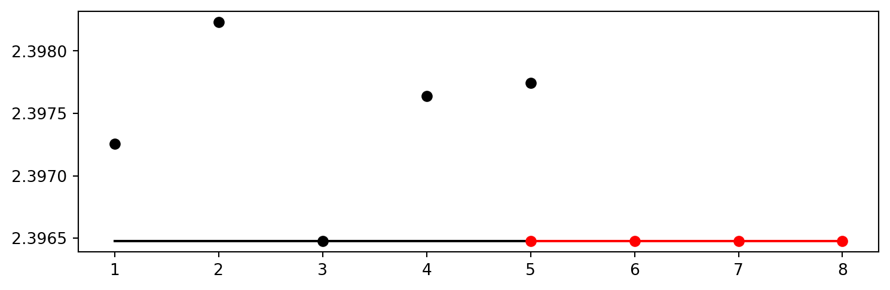
from spotPython.utils.eda import gen_design_table
print(gen_design_table(fun_control=fun_control, spot=spot_tuner))| name | type | default | lower | upper | tuned | transform | importance | stars |
|--------------|--------|-----------|---------|---------|---------------------|-----------------------|--------------|---------|
| _L0 | int | 64 | 6112.0 | 6112.0 | 6112.0 | None | 0.00 | |
| l1 | int | 8 | 6.0 | 13.0 | 6.0 | transform_power_2_int | 100.00 | *** |
| dropout_prob | float | 0.01 | 0.0 | 0.9 | 0.16952390674889734 | None | 0.05 | |
| lr_mult | float | 1.0 | 0.001 | 0.001 | 0.001 | None | 0.00 | |
| batch_size | int | 4 | 1.0 | 4.0 | 3.0 | transform_power_2_int | 0.11 | . |
| epochs | int | 4 | 2.0 | 3.0 | 2.0 | transform_power_2_int | 0.04 | |
| k_folds | int | 1 | 1.0 | 1.0 | 1.0 | None | 0.00 | |
| patience | int | 2 | 2.0 | 2.0 | 2.0 | transform_power_2_int | 0.00 | |
| optimizer | factor | SGD | 0.0 | 3.0 | 2.0 | None | 19.22 | * |
| sgd_momentum | float | 0.0 | 0.9 | 0.9 | 0.9 | None | 0.00 | |spot_tuner.plot_importance(threshold=0.025,
filename="./figures/" + experiment_name+"_importance.png")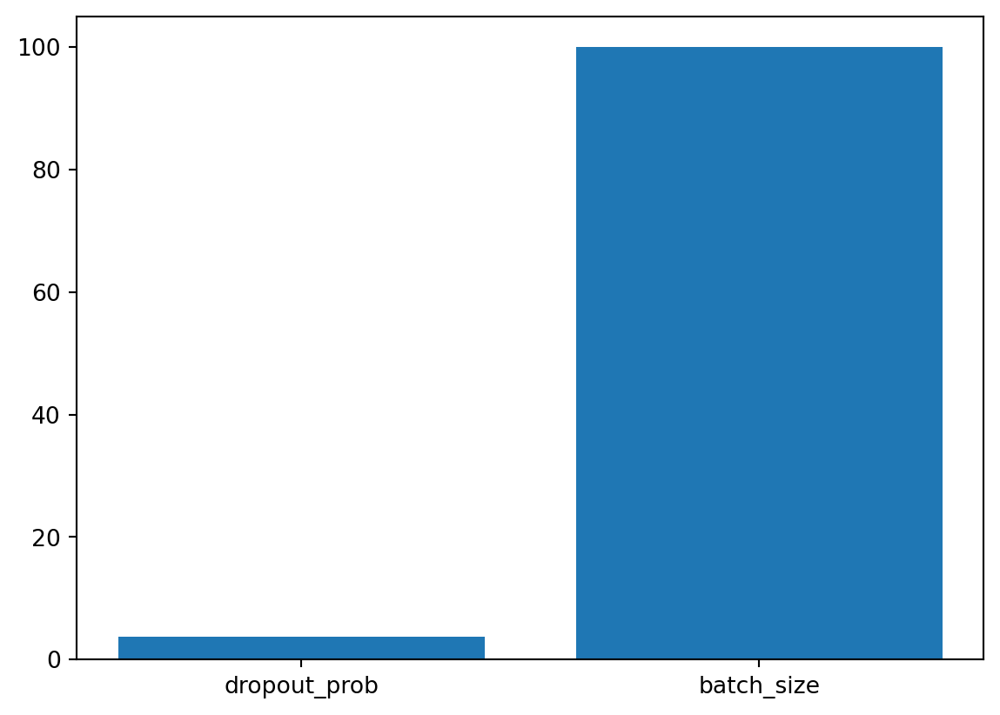
from spotPython.hyperparameters.values import get_one_core_model_from_X
X = spot_tuner.to_all_dim(spot_tuner.min_X.reshape(1,-1))
model_spot = get_one_core_model_from_X(X, fun_control)
model_spotNet_vbdp(
(fc1): Linear(in_features=6112, out_features=64, bias=True)
(fc2): Linear(in_features=64, out_features=32, bias=True)
(fc3): Linear(in_features=32, out_features=16, bias=True)
(fc4): Linear(in_features=16, out_features=8, bias=True)
(fc5): Linear(in_features=8, out_features=11, bias=True)
(relu): ReLU()
(softmax): Softmax(dim=1)
(dropout1): Dropout(p=0.16952390674889734, inplace=False)
(dropout2): Dropout(p=0.08476195337444867, inplace=False)
)from spotPython.torch.traintest import (
train_tuned,
test_tuned,
)
train_tuned(net=model_spot, train_dataset=train,
loss_function=fun_control["loss_function"],
metric=fun_control["metric_torch"],
shuffle=True,
device = fun_control["device"],
path=None,
task=fun_control["task"],)Epoch: 1 | MAPK: 0.1396604925394058 | Loss: 2.3997857658951371 | Acc: 0.0660377358490566.
Epoch: 2 | MAPK: 0.1373456865549088 | Loss: 2.3997300995720758 | Acc: 0.0660377358490566.
Epoch: 3 | MAPK: 0.1373456865549088 | Loss: 2.3999453738883689 | Acc: 0.0660377358490566.
Epoch: 4 | MAPK: 0.1404321342706680 | Loss: 2.3997413140756114 | Acc: 0.0660377358490566.
Returned to Spot: Validation loss: 2.3997413140756114If path is set to a filename, e.g., path = "model_spot_trained.pt", the weights of the trained model will be loaded from this file.
test_tuned(net=model_spot, test_dataset=test,
shuffle=False,
loss_function=fun_control["loss_function"],
metric=fun_control["metric_torch"],
device = fun_control["device"],
task=fun_control["task"],)MAPK: 0.1331521570682526 | Loss: 2.4000353191209878 | Acc: 0.0677966101694915.
Final evaluation: Validation loss: 2.4000353191209878
Final evaluation: Validation metric: 0.13315215706825256
----------------------------------------------(2.4000353191209878, nan, tensor(0.1332))k_folds attribute of the model as follows:setattr(model_spot, "k_folds", 10)from spotPython.torch.traintest import evaluate_cv
# modify k-kolds:
setattr(model_spot, "k_folds", 3)
df_eval, df_preds, df_metrics = evaluate_cv(net=model_spot,
dataset=fun_control["data"],
loss_function=fun_control["loss_function"],
metric=fun_control["metric_torch"],
task=fun_control["task"],
writer=fun_control["writer"],
writerId="model_spot_cv",
device = fun_control["device"])Fold: 1
Epoch: 1 | MAPK: 0.1638888865709305 | Loss: 2.3991378466288249 | Acc: 0.0932203389830508.
Epoch: 2 | MAPK: 0.1652777642011642 | Loss: 2.3990426063537598 | Acc: 0.0932203389830508.
Epoch: 3 | MAPK: 0.1652777791023254 | Loss: 2.3990653912226358 | Acc: 0.0932203389830508.
Epoch: 4 | MAPK: 0.1631944477558136 | Loss: 2.3991422414779664 | Acc: 0.0932203389830508.
Fold: 2
Epoch: 1 | MAPK: 0.1819444447755814 | Loss: 2.3964089155197144 | Acc: 0.0805084745762712.
Epoch: 2 | MAPK: 0.1826388835906982 | Loss: 2.3964365720748901 | Acc: 0.0805084745762712.
Epoch: 3 | MAPK: 0.1826388537883759 | Loss: 2.3967077811559041 | Acc: 0.0805084745762712.
Epoch: 4 | MAPK: 0.1798611134290695 | Loss: 2.3966541926066083 | Acc: 0.0805084745762712.
Fold: 3
Epoch: 1 | MAPK: 0.1854166984558105 | Loss: 2.3980512619018555 | Acc: 0.0936170212765957.
Epoch: 2 | MAPK: 0.1840277761220932 | Loss: 2.3983610630035401 | Acc: 0.0936170212765957.
Epoch: 3 | MAPK: 0.1821759343147278 | Loss: 2.3982506910959880 | Acc: 0.0936170212765957.
Epoch: 4 | MAPK: 0.1932870298624039 | Loss: 2.3971609195073444 | Acc: 0.0936170212765957.metric_name = type(fun_control["metric_torch"]).__name__
print(f"loss: {df_eval}, Cross-validated {metric_name}: {df_metrics}")loss: 2.3976524511973065, Cross-validated MAPK: 0.17878085374832153filename = "./figures/" + experiment_name
spot_tuner.plot_important_hyperparameter_contour(filename=filename)l1: 100.0
dropout_prob: 0.05244111943312226
batch_size: 0.10820119012658656
epochs: 0.03775071288899633
optimizer: 19.22005037669288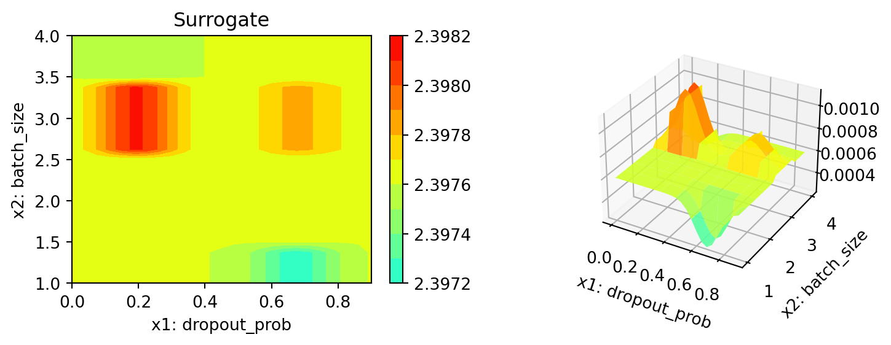
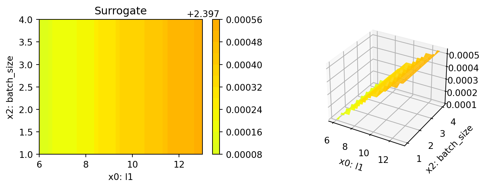
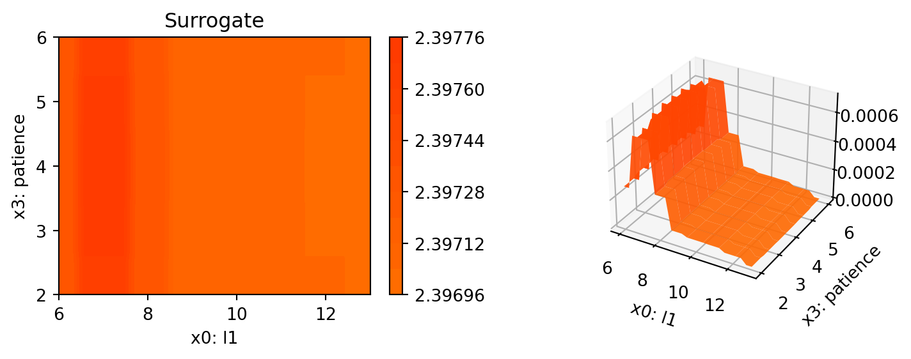
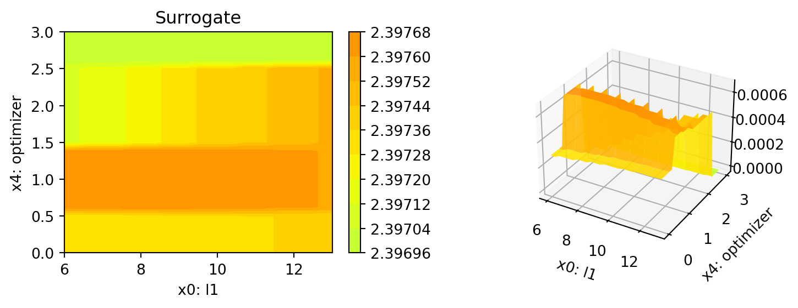
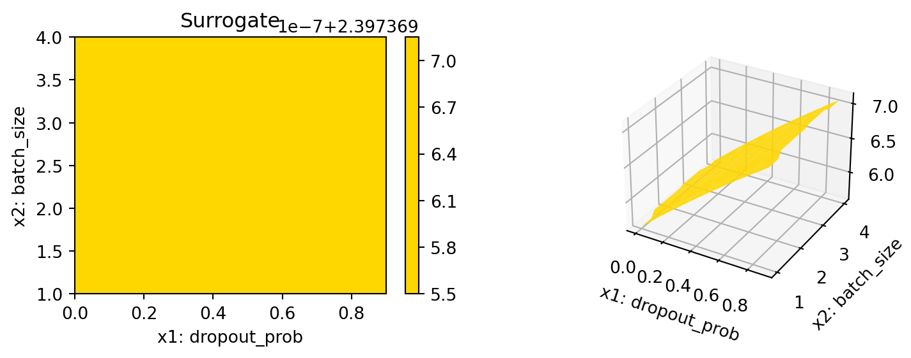
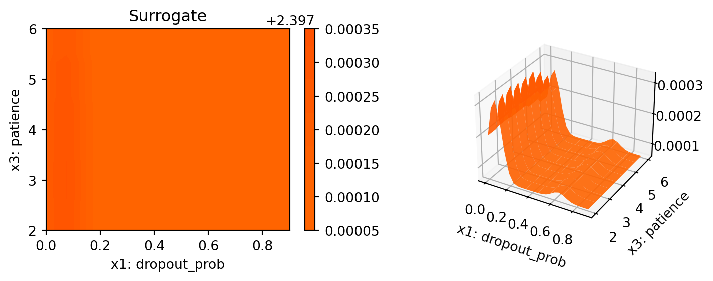
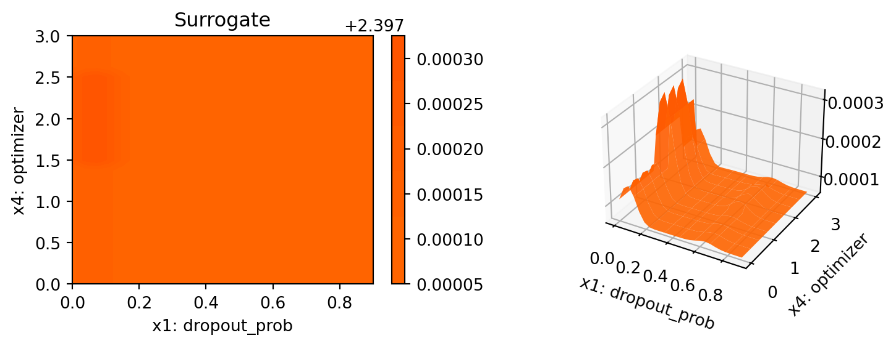
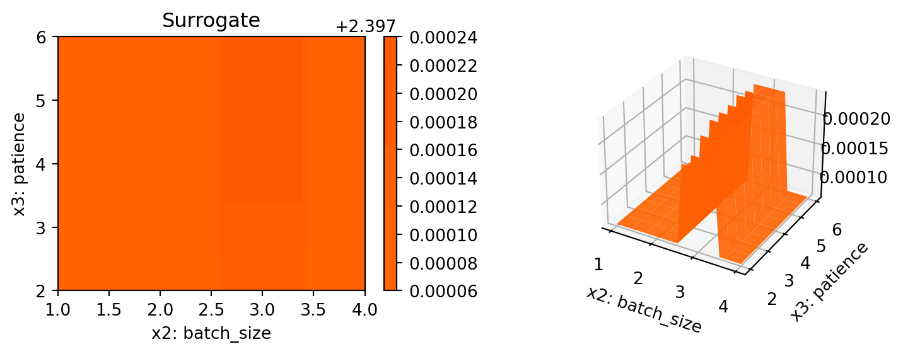
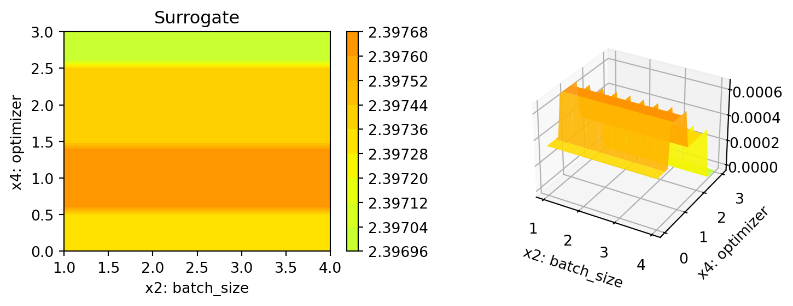

spot_tuner.parallel_plot()Parallel coordinates plots
# close tensorbaoard writer
if fun_control["writer"] is not None:
fun_control["writer"].close()PLOT_ALL = False
if PLOT_ALL:
n = spot_tuner.k
for i in range(n-1):
for j in range(i+1, n):
spot_tuner.plot_contour(i=i, j=j, min_z=min_z, max_z = max_z)